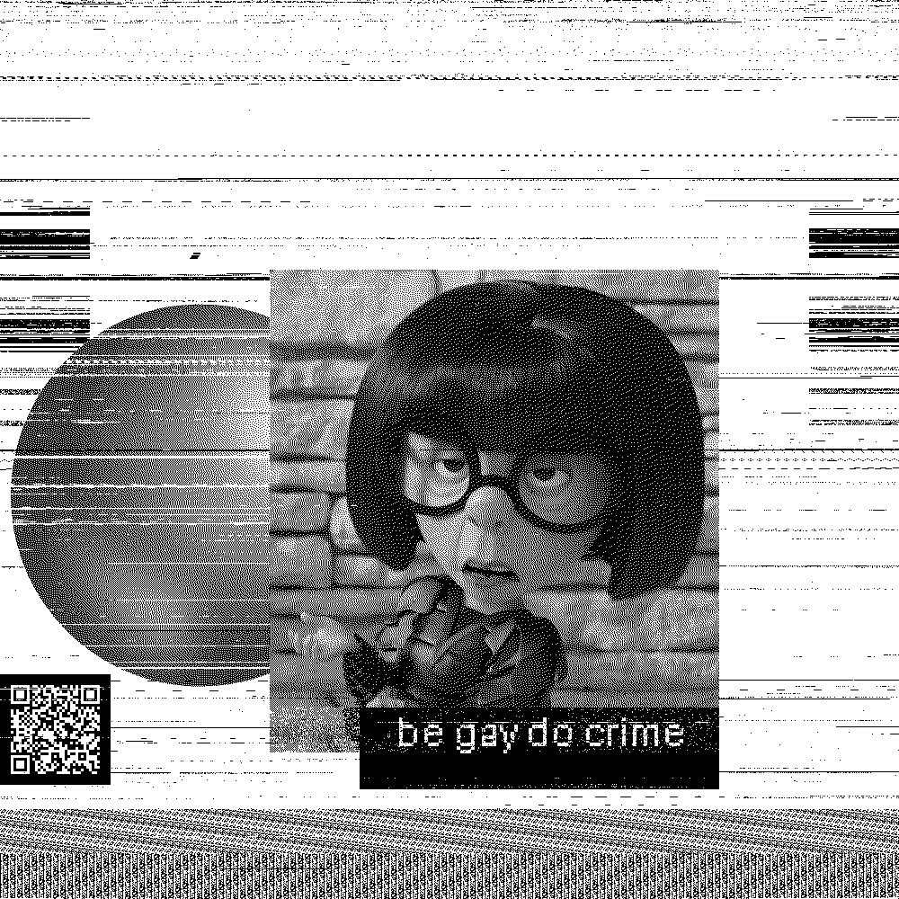
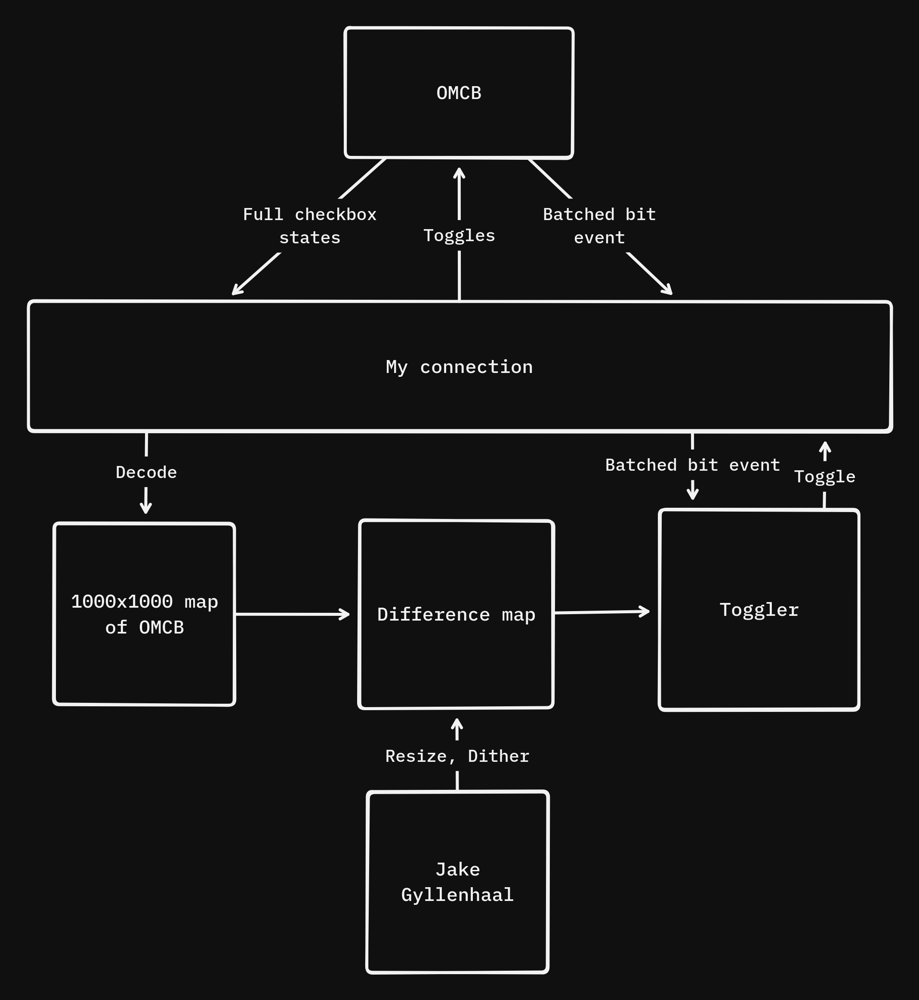
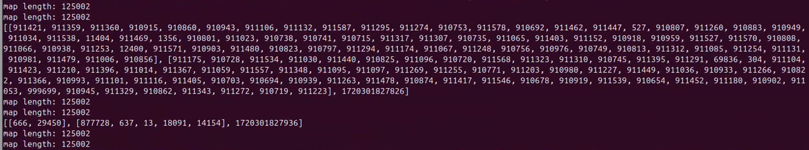
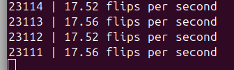
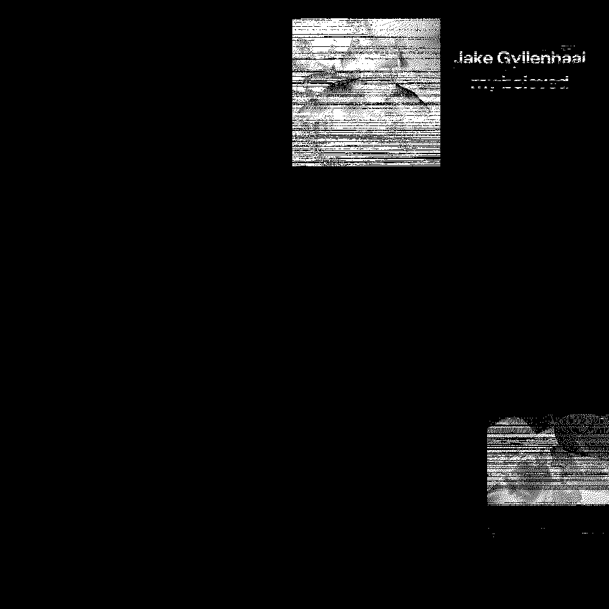
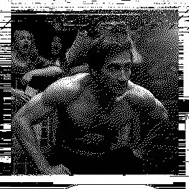
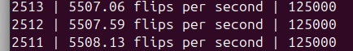
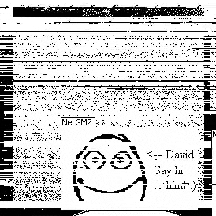
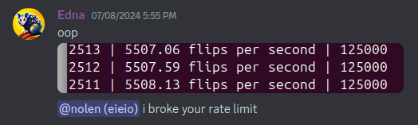

Okay.. first real blog post, and something interesting DID happen. Let's see how this goes, I'll start from the beginning. About 2 months ago (June 2024), one of my friends showed me an image of checkboxes. Then an image of some base64. I had absolutely no idea what they were talking about. About a week later, it leads to me drawing animated Jake Gyllenhaal on a hidden canvas shared with a small group of teens, also inhabited by millions of unknowing internet users. So. How did it happen? Well.. I honestly started out not really into it. My friend had embedded a series of bits into the site that represented what each checkbox was set to. They put in a link to a discord server that people start joining. Unfortunately I had some other stuff going on, like arcade (hack club shout out!); I was mostly an observer for the first few days. Yet, it was quite interesting watching them do this, and my friend even put an image of Edna Mode on the board for me. Eventually I couldn't help myself and jumped on the bandwagon.
this was quite inspiring
I started with just a static image of Jake with the text "Jake Gyllenhaal my beloved." This gave me WAY more trouble than I thought it would, for many reasons. At the time I started work on it, Nolen, the creator of one million checkboxes, had rewritten the site in go. So, I had some sort of standard to work off of that others had figured out. The first bit (or byte, if you will) is how bits were transported: two arrays of bit positions were sent, one setting bits to true and one setting bits to false. This was easy enough (right?). Well, that's when I figured out how weird binary in python is. The second bit: images were written on a 1000x1000 map of the checkboxes (because 1000x1000 is a million, so one checkbox became one black or white pixel) I started with a basic script, it took in bits and projected them onto the map, then toggled bits on a specific rhythm. This rhythm was based on incoming batched bit toggles (which I later found out were on a rate of 10 updates per a second). I figured that this would help keep up with the server: if I started receiving less updates, the server was likely freaking out and I should slow down. Did this work? 🤷
inserting jake gyllenhaal
So I was toggling bits at a decent rate. Only ten toggles per a second, but I only had one IP to work with so it was pretty fair. There's an issue though: the size of my projected map started changing size! This confused me to no end at first, but then I actually took the time to look up how binary in python works: if the binary starts with zeros, those zeros will be cut off. Not sure why, but it wasn't too hard to fix. I made some magic function that added those zeros back given that there are supposed to be 125000 bytes (8 bits in one byte!). Anyways, I finally got done with this weird binary formatting and moved on.
my map length was off!
i watched this number go down endlessly
At some point during this fiasco I had figured out how to also add multiple images to the board. It wasn't that hard since what I did was run a thread that got the state of the site and differed it to a dithered version of the image I wanted, then enqueued those differences to a queue that wrote them to the site. I also added a check to the bit database to make sure I wasn't toggling bits that were toggled since when I added them to the queue. So, to add more images, I just added more image differences to the queue, easy enough.
here's what a difference map looked like
The next front was clear: Animation. I started by getting the gif I wanted to write, which happened to be a clip of sexy shirtless Jake Gyllenhaal rising from his seat. I split this into frames, then wrote code to resize, dither, and enqueue them in my script. So.. that ended up not being that hard. Thanks Pillow for offering great and easy dithering.

oh damn
Except! What's the point of making an animation if you can't view it?? So I also wrote in a special class that would take a snapshot of the map and write it as an image when it occurred in the queue, then just inserted that class into the queue after each frame. This made sure the final video was synchronized to the time after each frame was written. If I took images at random intervals, only part of the frame would be updated so the image would appear torn, and the frame rate wouldn't be synchronized right.
final on the site
So I start the script, and I let it run for a bit, buuuuut I got kinda impatient. It took around an hour just to write the first frame. The canvas noise didn't help either, my frames kept getting overwritten. So I get this glorious idea to bump my flip rate. I start at double, and it works fine. Triple does too. Soon I'm at 200 flips per a second. Wait no, 800? 1200? The number went up and up until I finally hit a limit: 5500 flips per a second. Something wasn't right. Bumping my flip rate hadn't helped earlier in the process either, I got rate limited super hard. Well, I went with it, and ended up animating the entire thing in just a few minutes.
okay so that's not right
accelerate!
This was super fun, but I had to disclose this to Nolen because it seemed like a pretty big thing. He was really nice about it: When he figured it out, he explained the bug to me and even bounced the servers when my bot kept going and got me essentially blocked. It turns out a bug in the code had made it so if I was lucky and spammed the servers super hard, it would give me more leeway instead of less. I wonder how hard I hit it to get to 5500 flips per a second.
Yay!! Sexy jake gyllenhaal on the checkboxes site. Go check out the stuff below!
Nolen's essay | what's this | Questions? Reach out!